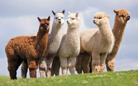
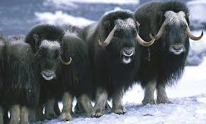
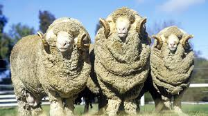

Pick a wool type.
There are a variety of different types of animals that wool can come from. Each type has propeties that make it appropriate for different uses. These are some example of my favorite types but it is far from an exahustive list.
-
Alpaca
 -
Musk Ox
 -
Merino Sheep

Sheer the sheep.
With a few exceptions, wool is aquired by sheering the animal. (A few, such as camels and musk oxen are combed.)